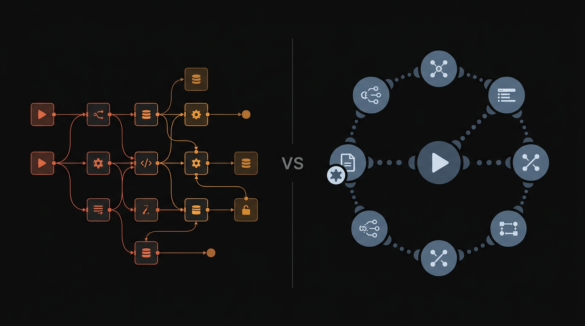

n8n vs Make.com (2026): Which Automation Tool Is Right for Your Business?
A hands-on breakdown of the two leading workflow automation platforms — covering pricing, self-hosting, integrations, and the exact scenarios where each one wins.

Disclosure: Some links in this article are affiliate links. If you sign up through them, I may earn a commission — at no extra cost to you. I only recommend tools I've personally used with clients.
If you've been searching for the right workflow automation tool in 2026, you've almost certainly landed on n8n and Make.com as your top two candidates. They're the most capable platforms at their price point, and they're genuinely different in ways that matter — especially for professional services firms like law practices, accounting offices, and marketing agencies.
I've deployed both tools across dozens of client engagements. Here's my honest breakdown of where each one wins, where it falls short, and how to decide which is right for your situation.
Bottom line up front: Choose n8n if you want self-hosting, unlimited executions, and full code access. Choose Make.com if you want the most beginner-friendly visual editor and don't want to manage infrastructure.
Quick Overview: n8n vs Make.com
| Feature | n8n | Make.com |
|---|---|---|
| Pricing model | Free (self-hosted) or $20+/mo cloud | Free tier + $9/mo paid |
| Execution limits | Unlimited (self-hosted) | Operations-based (capped per plan) |
| Self-hosting | Yes — Docker, Render, Railway | No (cloud only) |
| Visual editor | Good — node-based | Excellent — most intuitive on market |
| Native integrations | 400+ | 1,800+ |
| Custom code | Full JavaScript / Python support | Limited (functions module) |
| Data sovereignty | Full (self-hosted) | Data processed on Make's servers |
| AI / LLM nodes | Built-in AI agent nodes | OpenAI module (limited) |
| Best for | Technical teams, data-sensitive orgs | Non-technical users, quick prototypes |
Pricing: n8n vs Make.com
This is where the two tools diverge most sharply — and it's the first thing most people get wrong.
n8n pricing
Self-hosted n8n is free. You install it on your own server (Render, Railway, DigitalOcean, AWS) and pay only for hosting — typically €5–20/month. There are no execution limits, no per-operation charges, and no seat caps on the community edition. See n8n's official pricing page for full details.
If you don't want to manage a server, n8n Cloud starts at $20/month for 2,500 executions and goes up to $50/month for unlimited. For most small businesses running complex automations, the self-hosted route costs 90% less over a year.
Make.com pricing
Make.com charges per operation — each time a module (step) in your workflow runs, it consumes one operation. A 5-step workflow triggered 1,000 times costs 5,000 operations. See Make.com's pricing page for current plan details.
- Free: 1,000 operations/month
- Core ($9/mo): 10,000 operations/month
- Pro ($16/mo): 10,000 operations + priority support
- Teams ($29/mo): 10,000 operations + team features
For high-volume automations — say, processing 500 leads/day through a 10-step qualification workflow — you'd burn through 150,000 operations/month. That pushes you to Make's Enterprise tier or a custom plan. The costs escalate fast.
Verdict on pricing: For anything beyond light usage, n8n self-hosted is dramatically cheaper. Make.com's operation model is predictable at low volume but punishing at scale.
Running high-volume automations for your firm? Let's find the most cost-effective setup for your specific workflow.
Book a free strategy callEase of Use
Make.com: the most beginner-friendly automation tool
Make.com's visual editor is genuinely excellent. Scenarios (their term for workflows) are built by clicking a circle and searching for the app you want to connect. The interface is clean, the module configuration is guided, and the error messages are clear.
Non-technical team members — office managers, paralegals, account coordinators — can build functional Make.com automations with a few hours of practice. That's genuinely impressive.
n8n: powerful but with a learning curve
n8n's interface is node-based (similar to Zapier but more flexible). It's not difficult, but it requires more comfort with concepts like webhooks, HTTP requests, and JSON. If you've never mapped data between APIs before, n8n will take a day or two to click.
Once it does click, n8n is faster to build in for complex workflows — branching logic, loops, sub-workflows, and code nodes give you capabilities Make.com simply can't match without workarounds.
Integrations
Make.com wins on native integrations: 1,800+ pre-built modules vs. n8n's 400+. If you're connecting mainstream SaaS tools (Salesforce, HubSpot, Stripe, Shopify), Make.com will have a polished module ready to go.
n8n closes the gap with its HTTP Request node — if any tool has a REST API (and almost all of them do), n8n can connect to it. This actually makes n8n equally capable for advanced users who are comfortable reading API documentation.
For AI and LLM workflows specifically, n8n is now ahead. Its built-in AI Agent nodes (supporting OpenAI, Claude, Mistral) make it trivial to build autonomous agents that reason, call tools, and loop — all within the same workflow. Make.com's OpenAI module is more basic.
Self-Hosting & Data Sovereignty
This is a critical consideration for law firms, accounting practices, and healthcare-adjacent businesses — any industry where client data is sensitive.
With Make.com, your data passes through their servers. Every document you process, every client record you route, every email you parse — it all flows through Make's infrastructure. For most businesses this is fine. For regulated industries, it's a showstopper without a proper DPA.
With n8n self-hosted, your data never leaves your infrastructure. The automation engine runs on a server you control. This is why I exclusively recommend n8n for law firms and accounting practices — data sovereignty isn't optional in those industries.
Law firms and accounting practices: n8n self-hosted is the only responsible choice here. Client data stays on your infrastructure, full stop.
AI & Agentic Automation in 2026
The most significant development in workflow automation over the past year is the emergence of AI agent nodes — the ability to have an LLM reason through a task, call tools, and execute actions autonomously.
n8n has leaned into this hard. You can build a full AI agent workflow entirely within n8n: the agent receives input (a lead form submission, an email, a document), queries a knowledge base, decides what action to take, and executes it — all without human intervention.
This is exactly the kind of system I build for clients: an AI Lead Pipeline that scores and routes inbound leads in seconds, or a Document Intelligence workflow that extracts structured data from PDFs the moment they land in Google Drive.
Make.com can do basic LLM calls, but it doesn't have native agent orchestration. For serious AI automation in 2026, n8n is the stronger platform.
Which Should You Choose?
Choose n8n if:
- You handle sensitive client data (law, accounting, healthcare)
- You run high-volume workflows (500+ executions/day)
- You want to build AI agent workflows
- You have a developer or technical ops person on the team
- You want to own your infrastructure with no vendor lock-in
Choose Make.com if:
- Your team is non-technical and needs to build automations themselves
- You want the fastest path to a working prototype
- Your workflows are straightforward (trigger → action, low branching)
- You need a specific niche integration that n8n doesn't have natively
- Data sovereignty is not a concern for your industry
Conclusion
Both n8n and Make.com are excellent workflow automation tools. They're competing for different users. Make.com wins on approachability and native integration breadth. n8n wins on cost, data control, AI capabilities, and raw power.
For the professional services businesses I work with — law firms, accounting practices, marketing agencies — n8n is almost always the right answer. The self-hosting option alone makes it the responsible default for any team handling client data.
That said, the best tool is the one your team will actually use and maintain. If Make.com means your team builds and owns their automations independently, that's worth something too.
If you're not sure which fits your situation, book a free 30-minute call — I'll map your workflow and tell you exactly which tool (and which configuration) will give you the best return.
Frequently Asked Questions
It depends on your needs. n8n is better for technical teams who want self-hosting, unlimited executions, and full code control. Make.com is better for non-technical users who want a polished visual interface without managing infrastructure.
Yes, n8n can replace Make.com for most use cases. Both tools connect APIs, automate workflows, and handle conditional logic. n8n's self-hosted option makes it more cost-effective at scale, though Make.com's visual editor is more beginner-friendly.
n8n is the best free Zapier alternative for self-hosted deployments — you can run unlimited workflows on your own server at effectively zero cost. Make.com also has a generous free tier with 1,000 operations/month for lighter usage.
n8n is generally the better choice for law firms because it can be self-hosted for data sovereignty, supports complex multi-step workflows (client intake, document processing), and integrates with legal practice management tools via custom HTTP nodes.
n8n self-hosted is free (you pay only for your server, ~€5–20/month on Render or Railway). n8n Cloud starts at $20/month. Make.com's paid plans start at $9/month for 10,000 operations. At high volume, n8n self-hosted is significantly cheaper.